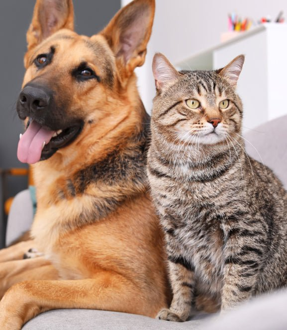

pros and cons of dogs
dogs have pros and cons and I will start with the pros. pros dogs can protect your family, are very loyal, can encourage exercise through walks and can be tarined to do diffenrt tasks. cons requires daily care and attention, and can be expensive over time. those are some of the pros and cons of dogs.
pros and cons of cats
cats have have pros and cons just like dogs and I will start with the pros again. pros cats don't need a lot of attention, and donesn't need to be token on walks. cons need to clean litter box, can be less affectonate then most pets, and their fur can get everywhere. those are some of the pros and cons of cats.